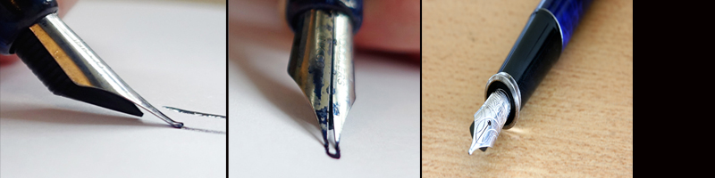
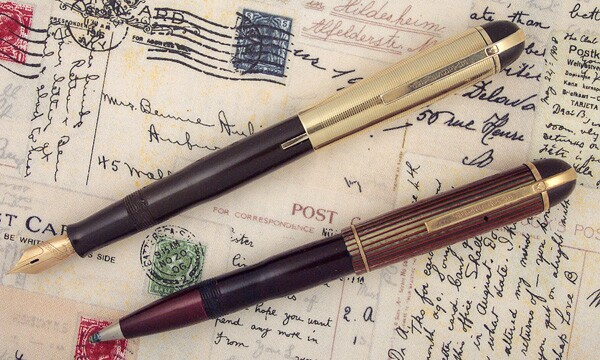

Past: What Inspired It All
Late 1870s: Fountain Pen
The fountain pen was used to draw ink from an internal reservoir so that a person could write or draw on a piece of paper or another surface.
In the late 1870s, an inventor from Rhode Island was putting the finishing touches on a stylographic fountain pen, a type of pen which utilized a wire to act as a valve in applying ink to paper. In October 1880 that inventor, Alonzo T. Cross, was issued U.S. Patent No. 232804, issued under the title Stylographic Pen. This innovation provided a screw-plug to prevent users from filling ink into an air tube included in the pen’s housing and used the motion of air bubbles moving from the air tube into the ink chamber to force ink through to the point of the pen.
Another fountain pen innovation from the period was found, simply titled Fountain Pen. Issued to Lewis E. Waterman of Brookly, NY, the patent claims an ink duct for a fountain pen consisting of a bar with a longitudinal groove which is accompanied by a series of longitudinal fissures. An increased air influx provided by the groove is inteded to prevent ink from flowing excessively when a pen is in motion.
1945: Ballpoint Pen
A man named Bíró studied medicine and art and was an editor of a newspaper. When taking notes as a journalist, he was forced to use fountain pen which had a number of shortocmings, especially smudging, which could make text unreadable. His first idea was to apply ink used to published newsprint to a fountain pen for writing. The issue arose that the newspaper print ink was vvery thick and viscous, making it difficult to flow evenly through the pen's tip. To conceive the next great innovation in personal writing utensils, Lazlo would enlist the help of his brother Georg, a chemist. The tool they developed was comprised of a pen with a metal ball bearing at the tip, which applied the ink onto paper and other surfaces.
On December 11th, 1945, Bíró was issued U.S. Patent No. 2390636, which is titled Writing Instrument, to protect his innovation. It claims a writing instrument with a reservoir for charging dense ink as well as a n air intake and a free ball tip. This invention did away with the problem of ink evaporation which requires frequent refilling of the ink chamber. This first ballpoint pen relied on gravity to draw ink towards the tip, requiring the user to hold the pen perfectly upright in order to write. Again with the help of his brother George, László was able to develop a pen which used capillary action to draw the ink towards the tip. A rough ball in the tip sponged up the ink and applied it evenly to a surface without the use of gravity.
Later on throughout the years, there were many improvements and changes made to the ballpoint pen in order to make it efficient and successful in writing utensils.
1970s: BIC 4-Color Pen
I'm sure everyone has heard of this pen or at least has had one before. You know the pen with a fat plastic barrel with four plungers--blue, red, black and green--at the top.
Even though there is not a lot of information on the history of this pen, this writing utensil is a worldwide favorite.
The Bic 4C pen was intoduced by Baron Bick (pronouned beek) in France in April 1970, and a year later in the United States. The pen is a favorite among nurses and students, who use different colors on medical charts for each shift.At the top of the Bic 4C pen is a unique little white ball at the top (representing the famous 'Bic boy' head, from the Bic trademark) that was used to dial a number on the old rotary phones.
In an article called "CLOSE TO HOME; Just a Pen, You Say? Not to Bic Boy" by Rick Marin, he describes how he was so amazed at the pen's industrial design that he tried to find out who invented it. He emailed the Bic team and there were no help. They said that there was an "internal team" and many of them were fated to corporate anonymity. One of the guest curators of the National Design Triennial at Cooper-Hewitt said that, "Trying to reclaim the history of these things is really hard. The brand becomes a designer, and the company forgets after a while who designed its products."
However, Marin explained that Bic 4C represented one of the early triumphs of democracy-in-design action. The pen was made to be popular, accessible and inexpensive. The consumer was given a semblance of choice, with each of the pen's cardinal directions representing a particular color ink. Arguably, it was part of a small group of products that combined over a period of time to create the 'expectation of color choice' that today's iMac has so compellingly capitalized on. It was known as the pen that never ran out of ink.